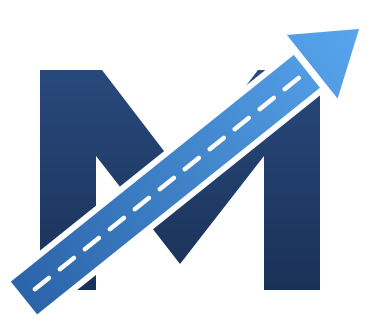

metoban
navigasyon
⚙︎
📍
⇅
Rotaları getir
Google
Yandex
TomTom
HERE
OSM
Ayarlar
Kapat ✕
Google API anahtarı (Maps JavaScript API + Routes API açık olmalı)
Dakikanın değeri (₺). Ücretli yol, kazandırdığı her dakika için bundan fazla istiyorsa önerilmez. Örnek: 10 ₺ ise 3 dk kazandıran yol en fazla 3 × 10 = 30 ₺ olmalı.
Açılışta son hedefe otomatik arama / öneriyi sesli oku
Otomatik arama açık
Otomatik arama kapalı
Maps: önce rotayı göster
Maps: doğrudan başlat
Ara nokta: en fazla 3
Ara nokta: en fazla 6
Ara nokta: en fazla 9
Ses açık
Ses kapalı
Favori hedefler
Rota renkleri: her geçişin rengi; aynı geçişten birden fazla rota varsa sırasıyla tonları kullanılır
Boğazı geçerken her köprü/tünelden en az bir rota (Google vermezse eksik geçiş başına 1 ek istek)
Göster
Kapalı
Daha yavaş ama daha ucuz rotalar
Hep göster
Eşikten fazla yavaşsa gizle
Daha yavaş ve daha pahalı rotalar (ör. km'si daha az olabilir)
Eşikten fazla yavaşsa gizle
Hep göster
Hep gizle
Gizleme eşiği: en hızlıdan yüzde kaç yavaş? (%)
Dolambaç sınırı (km başına dönüş). Üstündeki rotalar "sokak arası" sayılır, önerilmez. Örnek: 2 → 10 km'de en fazla 2 × 10 = 20 dönüş.
Google'ın göstermediği yolları arama: kaç deneme yapılsın (her deneme 1 istek harcar)
0
2
4
6
Ücret hesabı (kapatırsan istekler daha ucuz kademede kalabilir)
Açık
Kapalı
Harcama kilidi: aylık en fazla Routes isteği / harita yüklemesi / adres önerisi (aşılınca uygulama istek atmaz)
Geçiş ücreti tablosu (Google fiyat vermezse kullanılır; fiyatları ve yönü kendin düzeltebilirsin)
Otoyol tahmini: km başı ücret (₺/km), otomobil. Rota üzerindeki otoyol km'si × bu oran, en az / en çok sınırlarıyla
+ Haritaya dokunarak ücretli nokta ekle
Kayıtlı ara noktalar (koridorlar): işaretli olanlar her aramada ayrı rota olarak denenir
+ Haritaya dokunarak ara nokta ekle
Sürüş kayıtları (gerçek süre / Google tahmini)
Kayıtları temizle
Anahtar, ayarlar ve kayıtlar sadece bu tarayıcıda saklanır.
Rotanın dışındasın
API anahtarını ⚙︎ ayarlardan gir
Hata raporu kopyala
↻